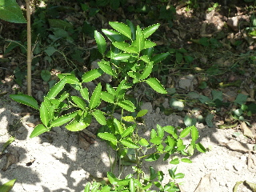
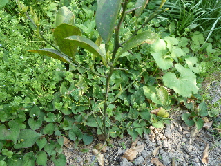
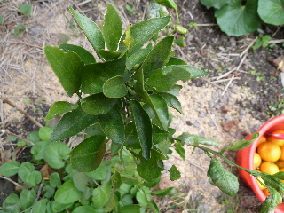
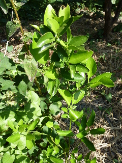

ポンカンはなかなか大きくならないです。
2014/05/31
ポンカンの種を蒔いてから4年過ぎましたが、まだまだ小さいです。

まだまだ先が長そうです。
でも枯れないだけでもいいかな。
手間暇掛けないで、成長が楽しめているので、これはこれでいいかもしれない。
大きくなったらなったで、場所を取ってしまいますよね。
2014/05/31
ポンカンの種を蒔いてから4年過ぎましたが、まだまだ小さいです。

まだまだ先が長そうです。
でも枯れないだけでもいいかな。
手間暇掛けないで、成長が楽しめているので、これはこれでいいかもしれない。
大きくなったらなったで、場所を取ってしまいますよね。
2013/04/28
去年もなくなりましたが、今年も葉っぱがなくなっていました。

去年よりは状態がいいですね。上の方には葉っぱがあります。
下の方はなくなりやすいのかな。
2012/10/27
見た目はそんなに大きくなった感じがしないんですが、春から15センチ大きくなりました。

これで55センチくらいです。
木の高さを測るのって、成長したのが実感出来ていいですね。
横にあるミカンは別の木のもので、これとは全然関係ないです。
2012/07/29
春には葉っぱがほとんどなくなっていましたが、復活しました。

茎が細くてひょろひょろしています。
今年はあとどれくらい大きくなるでしょうね。
畑仕事じゃないよ。